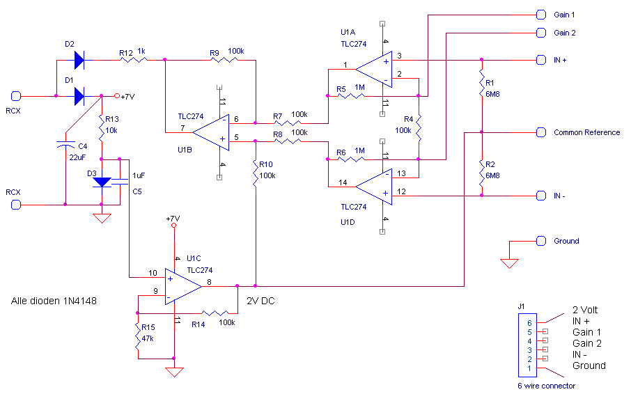
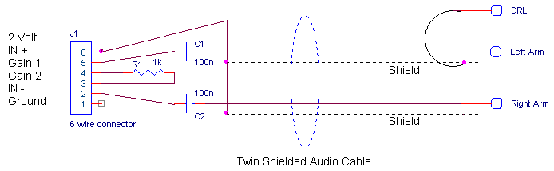

Robbert
Mattijs
Stef Mientki
august 2001
Version 1
Building Instructions
Example ECG
| Lego-Knex
Robbert Mattijs |
Mindstorms Bio-Amplifier
Stef Mientki august 2001 |
General Idea
Version 1 Building Instructions Example ECG |
General Idea 
The idea was to build a universal bio amplifier, capable of measuring
all kind of physiological signals, just be connecting a different sensor-cable
(with a few passive components).
Therefor, the sensor interface must at least have the following general
properties:
The design version 1 
The design is straight forward, U1A, U1D and U1B forms an standard
instrumentation amplifier (with a high CMRR=Common Mode Rejection Ratio).
The differential gain of this instrumentation amplifier is 2*R5/R4.
By putting a low resistor between the gain connectors GAIN1 and GAIN2 (that
is parallel to R4) you can reach a quiet high differential gain (i.e. 1
kOhm gives a gain of 2,000). It's also possible to put a frequency dependant
network between the gain terminals (resistor in series with a capacitor,
to get a low cutoff freqeuncy).
The common mode gain is always 1.
If you want a high cutoff frequency, you can place equal capacitors parallel to R9 and R10 (i.e. 47 nF gives a high cutoff of about 30 Hz).
With U1C a stable reference voltage is created, which is used for a
number of reasons.
First the output stage is set to 2V (if no differential mode signal
is present).
Second the inputs of the instrumentation amplifier is biased at 2Volts.
Third this voltage can be used to feed sensor bridges or perform resistance
measurements.
The connector is rotation sensitive, because there are only diodes in the positive power supply line. I put the amplifier in/on a 4*2 brick, which has a female Lego connector and therefor can plugged right on the RCX, so rotation isn't a problem for me.

Example: ECG
cable 
For measuring the Electro CardioGram (ECG), the following cable + adapter
is used.
Gain is set to 2000 by resistor R1.
Here a low cuttoff frequency is realized by C1 and C2.
For the cable it's best to use twin shielded audiocable, as shown in
the diagram below.
More information about the ECG sensor.
